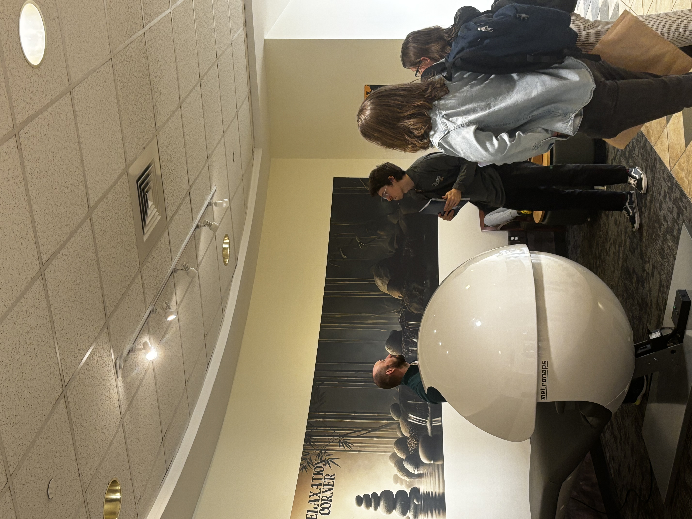
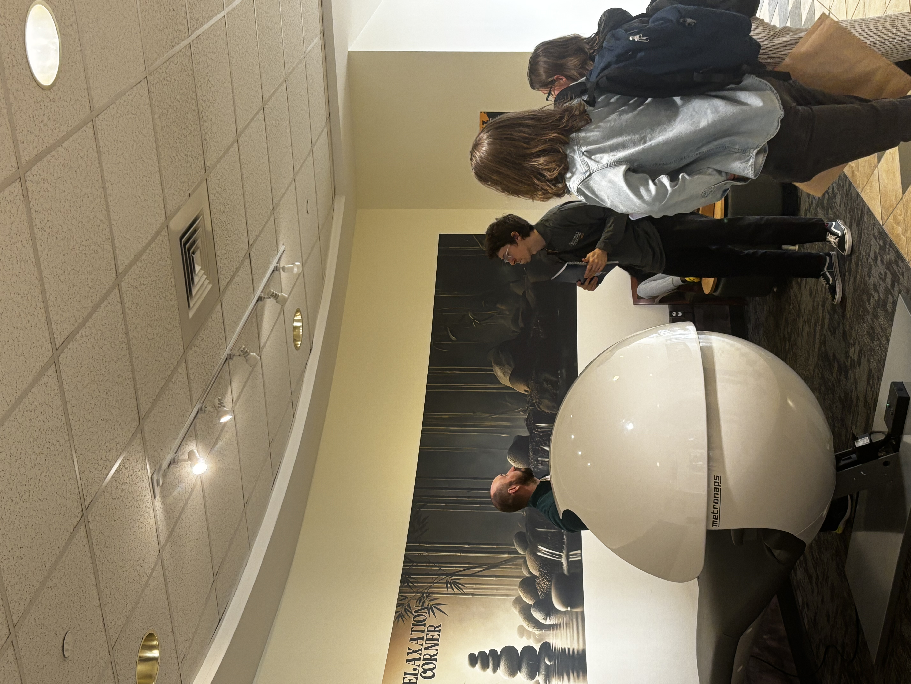

fifth sprint
This sprint was largely dominated by the final culmination of our research and preparation in finally giving our big presentation to the staff of the Commons. Leading up to the meeting we polished our slides and decided who would take what roles during the presentation–who would connect to the projector and navigate the slides, which slides would be discussed by who, and who would take notes on the feedback we received.

The meeting took place in one of the Commons’ salons with 5-6 staff members representing management (including our contact, Carole, the Director), creative team, technical staff, and maintenance. After introducing ourselves and our mission, we showed all of our research on the Relaxation Corner, students’ feedback on ways the space wasn’t meeting their needs and areas they wanted changed, and our ideas for ways to improve the space–including our prototypes and mockups. We laid out our goals and what we needed from them and opened up the floor for feedback.
During the presentation, I was in charge of connecting to the projector and navigating our slides while we all talked. I presented my work on developing new theming for the space with the new color scheme and the bamboo imagery. I had printed my prototype signs at full scale and during the presentation I had them out for the Commons team to view and give feedback on. And I helped answer their questions and discussed their quested changes to my and Nathan’s designs.
 

The staff members present were largely receptive to our ideas and excited to see that students wanted to get involved with the space. They discussed the feasibility of our ideas and which options would most likely be achievable in the space by the end of the semester. They also were willing to fund most of our changes, and asked that we just give them a list of specific options for new furniture and decorations from which they would choose and purchase for the space. For the new sign designs they wanted to combine my color scheme and design motifs with Nathan’s organization of the information and instructive illustrations. Additionally they wanted both posters to be formatted for large prints.
For the next sprint we will submit the redesign of the signs for Carole to print, our list of new furniture with options in different price points, and come up with a plan to temporarily cover up the AI poster at the back of the space before they’re able to replace it with a mural in the summer. Once they order the new furniture and decorations and print the new signs, we will work with them to do the actual redecoration of the space. We will then put out a new survey to collect feedback on our redesign to compare to what we collected from the original space and see how successful our work was.